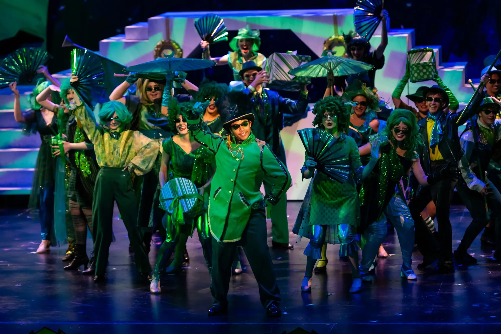

★ Production 03
The Wizard of Oz
- ★ Nominee — 2023 BroadwayWorld Austin AwardsBest Direction of a Musical
The production received nine nominations, including Best Dance Production and Best Theatre for Young Audiences Production. See the nominees ↗
{kind=link}
{kind=link}
{kind=link}
{kind=link}
{kind=link}
{kind=link}
{kind=link}
{kind=link}
{kind=link}
{kind=link}
{kind=link}
{kind=link}
★ The Company ★
The Wizard of Oz
By L. Frank Baum · Music and Lyrics by Harold Arlen and E. Y. Harburg · Background Music by Herbert Stothart · Based on the MGM film
- Dorothy Gale
- Sophia Laia
- Glinda / Aunt Em
- Arianna Pierce
- Wicked Witch of the West / Miss Almira Gulch
- Sarah Ferguson
- Scarecrow / Hunk
- Noah Wood
- Tin Man / Hickory
- Chavin Medina
- Cowardly Lion / Zeke
- JP Lopez
- The Wizard / Professor Marvel
- Kyra Carr
- Uncle Henry / Emerald City Guard
- Jordan Williams
- Toto Puppeteer
- Lucky Cantu
- Producer
- Summer Stock Austin, an Impact Arts program
- Music Direction
- J. Quinton Johnson
- Choreography
- Khali Sykes
- Scenic
- Theada Haining
- Lighting
- Rachel Atkinson
- Costumes
- Teresa Carson
- Sound
- LEVO
- Properties
- Rachael Gomez
- Flying Effects
- ZFX